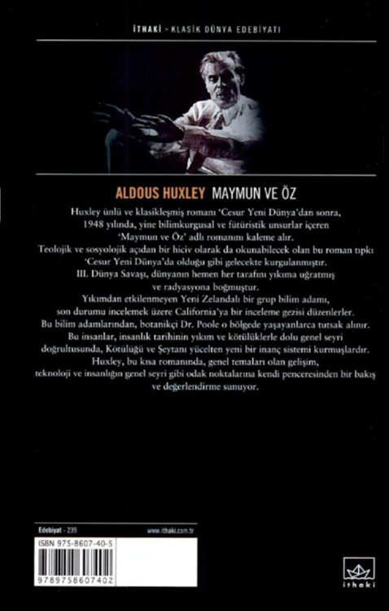

Boston... 1865... Dante'nin 'Cehennem'ini
Amerikalılara tanıtmak için hazırlanan
bir grup akademisyen... Ve 'Cehennem'i
canlandırmak
için harekete geçen bir katil!..
Adı, Umberto Eco'nun 'Gülün A d ı ' romanıyla bir-
likte anılan ve 20'den fazla dile çevrilmiş bir
polisiye-gerilim klasiği...
